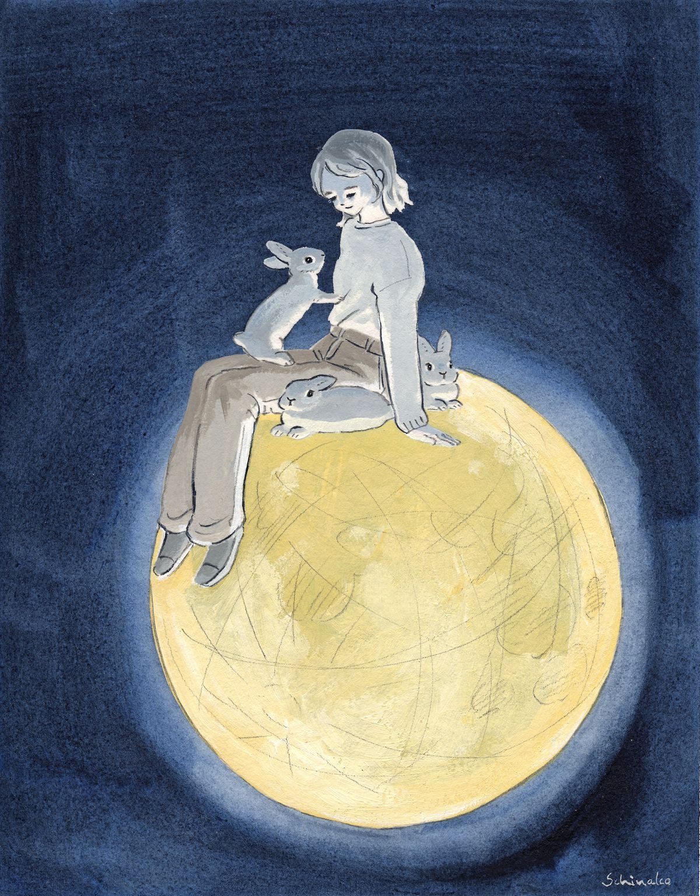

2021년 8월 11일 (수) Miracle of 30 minutes
책 [ 돈의 속성 ] 읽기
블로그: Challenge Day 26 업로드하기
미용실 앞머리 자르기 & 단백질 케어
생활코딩 배웠던 TAGS 정리하기
생활코딩 과제하기 (new 페이지 생성할 것!)
데스크 패드 주문하기
경기도 청소년 교통 지원금 신청하기
Upity 비트코인 뉴스레터 모음 정독하고 핵심 내용 정리하기
훈제 삼겹살 & 쇠고기 국밥

Course of My Life
일어나자마자 책을 읽었다. 아침을 먹고 바로 데스크 패드를 주문하기 위해 이것저것 뒤져 보았다.
주문 후에 26일째 Challenge를 진행했다. 55분 동안 영작 Challenge를 하고 난 후, 블로그에 포스팅을
했고 바로 미용실에 가기 위해 준비했다. 앞머리를 자르고 단백질 케어까지 하느라 시간이 생각보다 오래 걸렸다.
일찍 끝나면 카페에 가서 코딩 복습하려고 했는데... 집 가서 청소하고 앉았더니 벌써 저녁 시간이었다.
미리 녹여 놓았던 훈제 삼겹살과 명이 나물, 남은 쌈채소를 야무지게 쌈싸먹었고 운동을 나갈지 말지 극심한
갈등에 시달렸으나 결국 나가기로 결정했다. 미용실에서 집까지 왕복하느라 생각보다 걸음 수가 쌓여있었고
15000보를 걸었다. 집에 와서 개운하게 찬물로 씻고 코딩 복습을 시작했다. 그리고 지금은 그동안 배웠던
테크들을 활용해 Diary를 작성 중이다~~ 복습이 끝나면 유튭 좀 보다 잘지, 책을 읽다 잘지 고민 중이닿
That's enough for now
피곤하다고 코딩 복습한 거 내일로 미루지 않고 한 것!!
버스에서 다리 아파 힘들어하시는 여성분께 자리 양보한 것
밥 더 먹고 싶었지만 딱!! 참은 것
Slow & Steady
Upity 비트코인 뉴스레터 정독할 때 잠깐 존 것
책 읽다가 방심한 사이에 후루룩 읽어 다시 읽게 만든 것
18분 더 꼼지락 거리다가 일어난 것
지금 이 순간
오늘도 집순이의 알찬 하루 성공!!
매일 반복되어 따분하고 지루한 일상일지도 모르지만 결국 마지막 순간에는 특별한 일들보다 이런 일상적인 일들이
가장 먼저 떠오를 것이라는 걸 잊지 말아야 한다는 걸 요즈음 깊게 느끼곤 한다.
지금 내가 할 수 있는 일은 이러한 루틴 속에서 소소한 행복을 찾고 더욱 발전하고 내 마음을 건강하게 지키는
것이다. 그러면 언젠가는 그동안 쌓아왔던 것들이 빛을 볼 날이 오겠지~
오늘도 수고했다!!